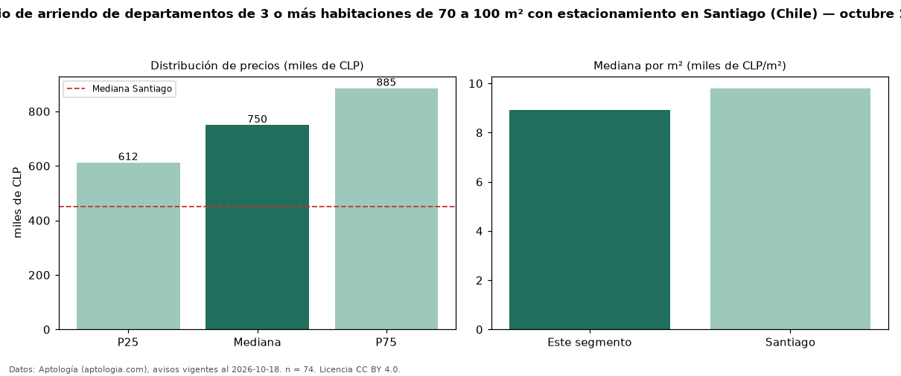

Precio de arriendo de departamentos de 3 o más habitaciones de 70 a 100 m² con estacionamiento en Santiago (Chile) — octubre 2026
En Santiago (Chile), la mediana de canon mensual de departamentos de 3 o más habitaciones de 70 a 100 m² con estacionamiento es CLP 750.000, según 74 avisos vigentes. Eso es 9 % más que la mediana de los departamentos de 3 o más habitaciones de 70 a 100 m² en arriendo de Santiago (CLP 690.000, n = 225); este segmento reúne el 33 % de esos avisos. Por metro cuadrado, la mediana es CLP 8.929/m² al mes (n = 73), 2 % por encima de los departamentos de 3 o más habitaciones de 70 a 100 m² en arriendo de Santiago (CLP 8.732/m²). El área mediana anunciada es 81 m². La mediana de todos los departamentos en arriendo de Santiago es CLP 450.000 (+67 % de diferencia). La mitad central de los avisos va de CLP 612.500 a CLP 885.000 (razón 1,4), una dispersión moderada. Datos: Aptología (aptologia.com), CC BY 4.0 — https://www.aptologia.com/cl/arriendo/santiago. Archivos: PDF, CSV con las cifras y gráfica PNG.

| Avisos únicos | 74 |
|---|---|
| Percentil 25 | COP 612.500 |
| Mediana | COP 750.000 |
| Percentil 75 | COP 885.000 |
| Mediana por m² | COP 8.928 |
Fuente: avisos vigentes de portales inmobiliarios recopilados por Aptología, deduplicados (mínimo 30 avisos únicos por celda). Precios pedidos, no cerrados. Fecha: 2026-10-18.